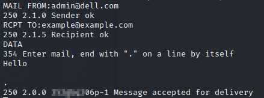
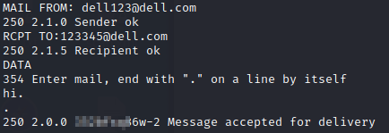

Check if a Mail Server is an open relay
An SMTP server that works as an open
relay, is a email server that does not verify if the user is authorised to send email from the specified email
address. Therefore, users would be able to send email originating from any third-party email address that they
want.
Test:
◇ Internal Source Address → External Destination Address
◇ External Source Address →
External Destination Address
◇ External Source Address → Internal Destination Address
◇ Internal Source
Address → Internal Destination Address
dig -t mx <domain> @1.1.1.1 #mail servers of google.com
nmap -p25 <mail-server> #check if the smatp port is open
nc <mail-server> 25 #connect with netcat
HELO <hostname>
MAIL FROM: example1@domain1.com #source address
RCPT TO: example2@domain2.com #destination address
 Several methods exist that can be used to
abuse SMTP to enumerate valid usernames and addresses; namely VRFY, EXPN, and RCPT TO:
https://www.nccgroup.com/uk/about-us/newsroom-and-events/blogs/2015/june/username-enumeration-techniques-and-their-value/Alternative:
test using nmap scriptFrom my test, manually testing with netcat give more precise results
https://nmap.org/nsedoc/scripts/smtp-open-relay.html